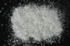

|
|
(For further information on spectroscopy, see:
http://speclab.cr.usgs.gov)
TITLE: Margarite GDS106 DESCRIPT
DOCUMENTATION_FORMAT: MINERAL
SAMPLE_ID: GDS106
MINERAL_TYPE: Phyllosilicate
MINERAL: Margarite (Mica group)
FORMULA: CaAl2(Al2Si2)O10(OH)2
FORMULA_HTML: CaAl2(Al2Si2)O10(OH)2
COLLECTION_LOCALITY: Chester, MA
ORIGINAL_DONOR: Jim Crowley, USGS Reston
CURRENT_SAMPLE_LOCATION: USGS Denver Spectroscopy Laboratory
ULTIMATE_SAMPLE_LOCATION: USGS Denver Spectroscopy Laboratory
SAMPLE_DESCRIPTION:
IMAGE_OF_SAMPLE:

END_SAMPLE_DESCRIPTION.
XRD_ANALYSIS:
40 kV - 30 mA, 6.5-9.5 keV
References: JCPDS #18-276; Huebner's patterns for margarite and chlorite; "ripidolite" GDS157
Found: Margarite and chlorite in subequal proportions Comment: Both phases have sharp reflections indicating good crystallinity and compositional homogeneity. (Jim Crowley, 1993, written communication.)
END_XRD_ANALYSIS.
COMPOSITIONAL_ANALYSIS_TYPE: None # XRF, EM(WDS), ICP(Trace), WChem
COMPOSITION_TRACE:
COMPOSITION_DISCUSSION:
END_COMPOSITION_DISCUSSION.
MICROSCOPIC_EXAMINATION:
END_MICROSCOPIC_EXAMINATION.
SPECTROSCOPIC_DISCUSSION:
Possible chlorite absorptions in the 2.3 micron region with a broad absorption from 0.5 to 2.0 microns.
END_SPECTROSCOPIC_DISCUSSION.
SPECTRAL_PURITY: 1c2b3b4_ # 1= 0.2-3, 2= 1.5-6, 3= 6-25, 4= 20-150 microns
| LIB_SPECTRA_HED: | where | Wave Range | Av_Rs_Pwr | Comment |
|---|---|---|---|---|
| LIB_SPECTRA: | splib04a r 2905 | 0.2-3.0µm | 200 | g.s.= |
| LIB_SPECTRA: | splib05a r 4278 | 0.2-3.0µm | 200 | g.s.= |
| LIB_SPECTRA: | splib06a r 13344 | g.s.= | ||
| LIB_SPECTRA: | splib06a r 13356 | g.s.= |
{kind=link}